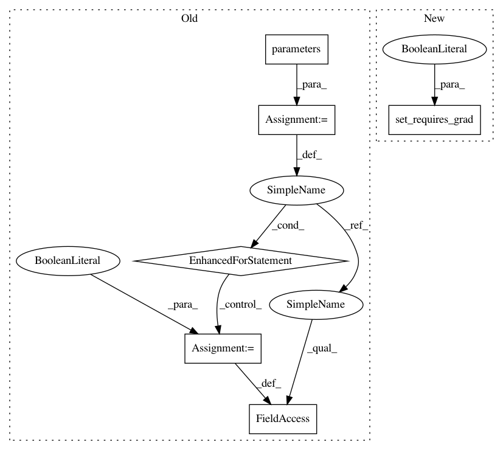

b37b5278bf1b0e5dcc9f0c0c1d983e233a7307d8,examples/cifar_stages/experiment.py,Experiment,_postprocess_model_for_stage,#Experiment#Any#Any#,10
Before Change
if stage == "stage2":
for key in ["conv1", "pool", "conv2"]:
layer = getattr(model_, key)
for param in layer.parameters():
param.requires_grad = False
return model_
@staticmethod
def get_transforms(stage: str = None, mode: str = None):
After Change
if stage == "stage2":
for key in ["conv1", "pool", "conv2"]:
layer = getattr(model_, key)
utils.set_requires_grad(layer, requires_grad=False)
return model_
@staticmethod
def get_transforms(stage: str = None, mode: str = None):
In pattern: SUPERPATTERN
Frequency: 4
Non-data size: 6
Instances
Project Name: Scitator/catalyst
Commit Name: b37b5278bf1b0e5dcc9f0c0c1d983e233a7307d8
Time: 2019-09-02
Author: tez.romach@gmail.com
File Name: examples/cifar_stages/experiment.py
Class Name: Experiment
Method Name: _postprocess_model_for_stage
Project Name: catalyst-team/catalyst
Commit Name: b37b5278bf1b0e5dcc9f0c0c1d983e233a7307d8
Time: 2019-09-02
Author: tez.romach@gmail.com
File Name: catalyst/contrib/models/encoder/resnet.py
Class Name: ResnetEncoder
Method Name: __init__
Project Name: catalyst-team/catalyst
Commit Name: b37b5278bf1b0e5dcc9f0c0c1d983e233a7307d8
Time: 2019-09-02
Author: tez.romach@gmail.com
File Name: examples/cifar_stages/experiment.py
Class Name: Experiment
Method Name: _postprocess_model_for_stage